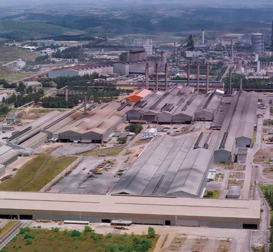
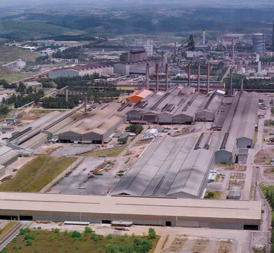

Este gran salto tecnológico sustituyó la producción manual por la fuerza mecánica, gracias a las primeras máquinas de vapor.
La Revolución Industrial comenzó en el Reino Unido y estimuló principalmente a la industria textil, generando un crecimiento económico y de productividad que nunca antes se había visto.


 



0
Cómo la colaboración entre mentes y máquinas está volviendo a las industrias más eficientes
La innovación siempre fue el ingrediente más poderoso para ayudarnos a producir más utilizando menos recursos. Cada revolución tecnológica tuvo un gran impacto en la forma en la que vivimos, transformando la economía, creando empleos, ayudando a comunicarnos mejor y aumentando nuestra calidad de vida.
Ahora estamos entrando en una nueva revolución. Una vez más, la tecnología está estimulando la productividad del sector industrial. La industria digital le está brindando a las máquinas la capacidad de ver, oír, sentir y enviar datos por internet en tiempo real para que sean operadas de manera mucho más eficiente.

En el 2020 se estima que 50 mil millones de dispositivos estarán conectados a la Internet
El Internet Industrial tiene el potencial de desencadenar una nueva ola de innovación, explorando los límites entre mentes y máquinas y optimizando no solo la industria, sino todos los aspectos de nuestras vidas.


Revoluciones Industriales
La transformación de la tecnología estimula la productividad y trae el crecimiento económico


Alo largo de gran parte de la historia de la humanidad, el nivel de vida y el crecimiento de la productividad se transformaron de manera extremadamente lenta. Sin embargo, hace 200 años un gran salto tecnológico sustituyó personas y animales por fuerza mecánica, gracias a las primeras máquinas de vapor. La Revolución Industrial se desarrolló en olas que ocurrieron en periodos cada vez más cortos. La segunda ola trajo motores de combustión interna, los coches, los aviones, el telégrafo, el teléfono y principalmente la electricidad.
La Revolución Industrial transformó nuestras vidas y estimuló la productividad y el crecimiento económico. La renta per cápita en economías de Occidente requirió de 800 años para duplicarse hasta el inicio del siglo 19. En los 150 años siguientes, esa renta creció 13 veces.

En la década de 1970, el crecimiento de la productividad se estabilizó, desacelerando la economía. Vino entonces la tercera ola, con la expansión de la computación y del internet global, lo que transformó la forma de hacer negocios, de consumir contenidos y de comunicarse con los demás. Vino entonces un nuevo salto en la productividad.
Los avances tecnológicos permitieron que compañías surgidas de la nada se hicieran multimillonarias en un corto periodo de tiempo, tales como Facebook que pasó de cero a una facturación de casi US$ 2 mil millones en menos de 6 años.
La revolución de los datos transformó la economía, pero alrededor del año 2005 el aumento de productividad se estabilizó nuevamente. Sin embargo, la evolución incesante de la tecnología sigue creando nuevas oportunidades.
“Hoy, la gran tendencia es el Internet de las Cosas. El Internet Industrial es el Internet de las Cosas aplicado a las máquinas industriales”

Marcelo Blois,
líder de Software & Analytics del Centro Global de Investigaciones
de GE, en Rio de Janeiro.
Internet de las Cosas
Desde que se inventaron, las computadoras siempre han sido dependientes de los humanos para recibir información. Las personas escriben textos, comparten fotos y escanean códigos de barras que alimentan a las computadoras y al internet. El problema es que los seres humanos son excelentes para tener nuevas ideas, pero no son eficientes para capturar los datos de las cosas físicas, tales como equipos y máquinas. Para solucionar esto, se creó el Internet de las Cosas, término acuñado por el emprendedor británico Kevin Ashton en 1999 para describir dispositivos físicos conectados a Internet, recogiendo datos sin la necesidad de ayuda humana.
En los últimos años, Internet de las Cosas ha permitido que dispositivos tan diferentes como automóviles o monitores cardíacos se conecten a internet. Ahora, el Internet Industrial permite que las fábricas, los trenes y las plataformas de petróleo también estén conectados, enviando datos en tiempo real y permitiendo que las personas comprendan mejor cómo funcionan, evitando el desperdicio de recursos y haciendo las industrias más eficientes.
La unión entre mentes y máquinas está provocando la cuarta ola de la Revolución Industrial, con el potencial de transformar una vez más la industria global.

Internet Industrial
Máquinas inteligentes están haciendo las industrias más eficientes
En 2015, alrededor de 5 mil millones de aparatos estaban conectados a internet. Según PriceWaterhouseCoopers, 2.5 trillones de bytes son creados a diario, y el 90% de los datos disponibles en el mundo han sido creados en los últimos 2 años. En los próximos años la industria se transformará, lo que significa que en 2020 50 mil millones de dispositivos electrónicos estarán conectados – un crecimiento de 10 veces en apenas 5 años.
Pero ¿por qué las iniciativas de Internet Industrial empezaron a acelerarse hasta los últimos años si estamos ya desde hace algunas décadas en la era de la información digital? Debido a que las tecnologías esenciales para la viabilidad de Internet Industrial se han tornado accesibles.
“En el pasado era más difícil colocar estos sensores en las máquinas, incluso debido al grado de miniaturización, el avance tecnológico y los costos”
Marcelo Blois
Uno de los factores clave – y quizás el más importante – está relacionado con la reducción del precio de los sensores, dispositivos fundamentales para que las máquinas logren colectar datos como, por ejemplo, la temperatura, presión o vibración. Estos son algunos de los datos que indican si un equipo está operando en el máximo de su productividad, o si está a punto de descomponerse.


El aumento de la velocidad de internet también tuvo un papel fundamental. Los sensores en operación generan una enorme cantidad de datos y con la conexión adecuada, es posible transmitir la información en gran escala en tiempo real, algo que no existía hasta hace poco tiempo.
El avance de las herramientas de Big Data y de las técnicas de análisis de datos ha permitido que hoy sea posible comprender la gigantesca cantidad de datos generados por los dispositivos inteligentes.
Según el informe Industrial Internet “Insight Reports” de GE, el 73% de las compañías ya invierten más del 20% de su presupuesto en tecnología para análisis de Big Data.
Esta gran cantidad de datos también necesita ser almacenada, organizada y analizada, lo que genera la necesidad de una infraestructura robusta. Y ahí es donde entra la computación en la nube. “Los cálculos hechos por los algoritmos que se basan en Machine Learning (aprendizaje automático), cuando se realizan a gran escala, exigen un poder de procesamiento paralelo en la nube”, destacó Blois. “Esto le da inteligencia al algoritmo, permitiendo a la máquina reaccionar en tiempo real”, completó.
Cuando dispositivos consiguen escuchar, sentir y reaccionar, la gente logra trabajar de modo más eficiente. Máquinas inteligentes detectan problemas que a un operador humano podrían escapar, lo que le permite a un equipo prevenir los problemas antes de que sucedan.
CELSE
Con la primera operación prevista para enero del 2020, la Termoeléctrica Puerto de Sergipe, ubicada en Barra dos Coqueiros y operada por CELSE (Centrales Eléctricas de Sergipe SA), será la mayor planta de gas natural en América Latina y la primera a tener soluciones de ciberseguridad, además de las soluciones digitales APM (Asset Performance Management) y OO (Operations Optimization). Estas soluciones ayudarán a mejorar el rendimiento y la disponibilidad de la planta y permitir la conectividad de tecnología operativa segura.
Ya las soluciones de seguridad cibernética ayudarán a mejorar la seguridad de funcionamiento de la planta, reducir el riesgo de continuidad del negocio y a cumplir con las regulaciones NERC CIP.
Este proyecto es el primero de GE Power en la región, cuya capacidad de generación es de 1,5 GW, con tres turbinas de gas de clase H, tecnología de transmisión, servicios y soluciones digitales.
Además de proporcionar toda la tecnología, GE dirigirá el proceso de construcción y proveerá el equipo responsable de la generación y transmisión de energía, y ha firmado contratos de servicios para el mantenimiento de la planta durante 25 años, incluyendo el mantenimiento programado en las turbinas de gas y vapor, componentes auxiliares, generadores y sistemas de control.
DISPOSITIVOS INTELIGENTES
Los sensores captan datos en tiempo real, monitoreando la operación de los equipos industriales.

INFORMACIÓN INTELIGENTE
El gran volumen de datos se almacena, organiza y visualiza por medio de herramientas de análisis de datos.
DECISIONES INTELIGENTES
Los gestores consiguen prever los problemas antes de que sucedan, garantizando que los equipos funcionen en el tope de su eficiencia.


Información inteligente
no significa el análisis de datos únicamente de una máquina trabajando aisladamente, sino de flotas enteras interconectadas por internet y que pueden ser ajustadas en tiempo real. Los datos operacionales pueden ser compartidos entre las máquinas, flotas, redes o personas, facilitando la colaboración y haciendo la toma de decisiones más eficiente.
El potencial de transformar las industrias está atrayendo las inversiones de los gigantes. Uno de ellos es el gobierno alemán, que decidió invertir en lo que ellos llaman Industria 4.0 como una de sus principales iniciativas estratégicas para la década. El objetivo es hacer que el país sea líder europeo en manufactura digital.
En el mismo sentido, GE ha creado recientemente la unidad GE Digital, para reunir todas las capacidades digitales de la empresa en una única organización y consolidar su estrategia de convertirse en la mayor compañía digital industrial del mundo.
Fabricas Inteligentes
El seguimiento del desempeño garantiza que los equipos funcionen en el tope de su productividad
Desde la Revolución Industrial la mayoría de las cosas que consumimos es manufacturada por máquinas. En los dos últimos siglos estas han evolucionado, volviéndose más rápidas, seguras, económicas y produciendo más con menos recursos.
Las máquinas vienen a la vida dentro de las fábricas, donde necesitan funcionar como si fueran un único organismo de un sistema complejo de partes que necesitan trabajar juntas. Cuando una de ellas falla, toda una cadena de montaje puede parar.
Los procesos de operación y de mantenimiento mejoran constantemente y ayudan a establecer el tiempo promedio para el mantenimiento de los equipos. Sin embargo, la mayoría de los datos es recolectado por personas. Esto impone complicaciones tales como falta de tiempo y de objetividad. Por no hablar de los riesgos para un empleado que intenta investigar un ruido anormal en la maquinaria.
Ahora las máquinas se están haciendo inteligentes y consiguen decirnos lo que nuestros ojos no pueden ver.
Esto permite que los gestores de las plantas industriales puedan acceder al desempeño de los equipos de una fábrica en tiempo real, lo que significa que una máquina puede advertir que va a presentar un fallo antes de la fecha prevista de mantenimiento. Son informaciones que ayudan a prever problemas con semanas e incluso meses de antelación, evitando paradas en la cadena de montaje y garantizando que funcionen en el tope de su eficiencia.
Esa tecnología puede parecer algo que pertenece a un futuro lejano, pero ya es una realidad.
Gerdeau implementó un proyecto piloto de monitoreo digital de sus activos, en una iniciativa pionera en la industria de acero en todo el mundo.
La unidad GE Oil & Gas en Jandira (SP – Brasil) automatizó el control del inventario de activos para reducir el tiempo de inactividad de la fábrica.
VEA LOS CASOS ABAJO


El proyecto piloto
desarrollado por GE Digital para Gerdau, incluyó la instalación de 1,2 mil sensores en 50 máquinas y luego identificó dos problemas posibles en la maquinaria. Ellos se solucionaron con la antelación del mantenimiento, evitando costos adicionales para la empresa.
Eso se debe al hecho de que el mantenimiento preventivo evita que los equipos fallen y se detengan por un periodo largo de tiempo, esperando la reposición de piezas. “Esa espera puede durar meses, pues los equipos son, por lo general, importados”, dijo Soares, añadiendo que el monitoreo también permite evitar las paradas para los mantenimientos programados que pueden ser innecesarios.
“Solo el ahorro con esas acciones preventivas ya se igualó al costo del proyecto piloto, de más de R$ 3 millones”
Rodrigo Belloc Soares,
director industrial de Aceros Brasil/Gerdau
El resultado es que ahora Gerdau va a invertir R$ 70 millones hasta el fin del año 2017 para instalar alrededor de 30 mil sensores en 600 máquinas de 11 plantas en Brasil. La expectativa es que las inversiones en este proyecto se paguen en un máximo de dos años con los beneficios generados por el sistema, informa Soares.
Todos los datos generados por los equipos están siendo monitoreados por intermedio de Asset Perfomance Management (APM) – o Gestión de Desempeño de Activos – una solución de monitoreo digital online desarrollada por GE Digital.
“El APM combina los softwares SmartSignal e Historian para proveer servicios, monitoreo remoto y la experiencia analítica de GE proveniente de su Centro de Desempeño Industrial y Confiabilidad en Illinois, E.E.U.U.”
Rodrigo Belloc Soares
SmartSignal identifica fallas en los equipos semanas e incluso meses antes de que ocurran, utilizando datos existentes, recogidos y almacenados por Historian. Juntos, ellos advierten sobre los problemas inminentes de los equipos, permitiendo que los operadores se enfoquen en arreglarlos en vez de buscarlos.
 

Central Puerto
Con la creciente demanda de energía en Argentina, la mayor empresa privada de generación de energía Central Puerto, está encontrando maneras innovadoras para mejorar la confiabilidad y desempeño de sus operaciones para responder a las necesidades del país.
GE firmó un acuerdo con Central Puerto por nueve años para extender un contrato de mantenimiento para apoyar la planta de ciclo combinado de 760 MW en Buenos Aires.
“El elemento clave para la modernización del sector energético de Argentina es la transformación digital. Las soluciones digitales avanzadas, incluso los sensores y sistemas de mantenimiento predictivo, ayudarán a aumentar la confiabilidad y eficiencia de la planta, y reducirán los costos innecesarios para su mantenimiento”
Ramon Paramio,
Gerente General de Power Services para Latinoamérica
Este acuerdo pone a disposición de Central Puerto una gama de tecnologías de GE Power, incluyendo la mejora completa a su planta de generación, control de sistemas, un sistema de filtración de combustible líquido, mejoras en el equipamiento de la planta, así como servicios que mantengan en forma las estaciones de carga de calderas, los condensadores, y las turbinas de vapor. Este nuevo acuerdo también marca la primera vez que GE traerá soluciones digitales avanzadas al sector energético de Argentina.
Con Predix, el sistema operativo basado en la nube de GE, construido especialmente para la industria y su aplicación Asset Performance Management (APM), que recopilará información para monitoreo, análisis, mejora y predicción del equipo de Central Puerto. La detección de anomalías através de APM, ayudará a predecir problemas incluso antes de que sucedan, lo que mejora la confiabilidad de la planta, permite la optimización justo cuando se necesita y reduce el tiempo no planeado.
Con miles de sensores
colocados en la planta de 760 MW de ciclo combinado, el sistema de mantenimiento predictivo APM ayudará a incrementar la confiabilidad y disponibilidad de la estación, mientras reduce costos innecesarios de mantenimiento.
Transporte Inteligente
Locomotoras conectadas están transformando el transporte ferroviario


Aunque sea fundamental en nuestras vidas, el transporte logístico es el tipo de cosas que sólo recordamos cuando deja de funcionar correctamente. Cuando eso ocurre, alimentos pueden echarse a perder y fábricas pueden quedar sin materia prima en el momento adecuado, lo que afecta la vida de millones de personas.
El transporte es una industria con pequeñas márgenes, y el costo de las inversiones, de las operaciones y del mantenimiento del transporte ferroviario es de US$ 245 mil millones al año. En otras palabras, cada porcentaje de ahorro en energía y tiempo puede impactar en los beneficios de las empresas del sector.
En Brasil tenemos algunos desafíos más. Aquí están en actividad los trenes más pesados del mundo, los cuales son responsables del transporte de minerales.
Debes imaginar un tren con una longitud aproximada de hasta 3 km, con una carga que equivale a 500 Boeings 737, es decir, casi 40 mil toneladas. Añades a eso un relieve accidentado, como la conexión entre Curitiba y el Puerto de Paranaguá, en Paraná, que cruza la Sierra del Mar.
“Eso significa que mientras en algunas partes del recorrido una parte del tren está bajando, la otra parte está subiendo. Mientras que una de las locomotoras de este tren está acelerando, la otra puede estar frenando.”

Lucas Malta,
líder del Programa de Aviación y Transporte del
Centro de Investigaciones Global de GE en Brasil.
“En términos prácticos, se estima que una mejora del 1% con respecto a la velocidad de la red, el consumo del combustible y la mejoría de la utilización, tanto en las locomotoras como en los vagones, resultaría en un beneficio de US$ 6 mil millones para la industria ferroviaria”, dijo Malta. “Es un gran desafío, pero también una gran oportunidad”, añadió.
Una nueva generación de locomotoras inteligentes
está transformando el transporte ferroviario, ahorrando combustible y generando datos que han resultado en eficiencia. La locomotora Evolution ES43BBi, fabricada por GE en la unidad de Contagem (MG - Brasil) es un ejemplo de esa nueva generación.
“Esta locomotora tiene alrededor de 250 sensores que capturan parámetros internos, tales como el rendimiento del motor y del tubo de escape o la mezcla del combustible, y también los externos, como la condición de la red ferroviaria. Es decir, es inteligente porque además de ser eficiente, también se comunica y consigue auto diagnosticarse, identificando problemas y previniendo las fallas durante su operación.”
Lucas Vargas,
investigador del Programa de Aviación y Transporte en el Centro de Investigaciones Global de GE.
Las 95 locomotoras Evolution que están activas en el país permiten que los trenes se comuniquen constantemente, enviando y recibiendo información. A cada hora de operación GE Evolution logra enviar hasta 9 millones de datos, los cuales son analizados en tiempo real por productos como el Trip Optimizer.

“Es como un piloto automático para trenes de carga. Es el cerebro del tren, responsable de determinar el mejor perfil de aceleración y de velocidad con el objetivo de minimizar el tiempo de viaje y el consumo del combustible.”
Carlos Gonzaga,
investigador de Control de Sistemas del Centro de Investigaciones Global de GE.
Durante el viaje, ese perfil puede ser actualizado de acuerdo con las condiciones del ambiente, en caso de desvíos del perfil planeado o si ocurre algo imprevisto.
Carolina Neves, investigadora del Programa de Aviación y Transporte del Centro de Investigaciones Global de GE, dijo que, dependiendo de las características del relieve de la ruta, del peso del tren y de otros factores, tales como la configuración del tren, el uso de Trip Optimizer puede resultar en un ahorro del combustible que varía entre el 3% y el 17%.
Predix
La plataforma de software de GE que permite a los datos operativos llegar a las personas correctas en el momento correcto

Con más 124 años de experiencia en la construcción de máquinas potentes, GE está reinventandose a sí misma como una compañía digital industrial. El enfoque de esos cambios está en la nueva unidad de negocios creada para reunir sus productos digitales: GE Digital.
Según Jeffrey Immelt, CEO de GE, el plan es hacer que la unidad recién creada – que tuvo un ingreso de US$ 6 mil millones en 2015 – se convierta en una de las 10 mayores compañías de software del mundo en 2020, cuando GE deberá procesar 1 millón de terabytes de datos por día.

Pero ¿cómo las distintas industrias logran conectarse y analizar datos de dispositivos tan diferentes como motores de avión y plataformas de petróleo?
La respuesta de GE Digital está en Predix, el sistema operativo industrial que conecta a los dispositivos y a las personas en la nube, permitiendo el intercambio de datos en escala industrial.
Predix
es la plataforma de software que permite que los datos recogidos por sensores en los dispositivos industriales sean almacenados y organizados en la nube y puedan ser accesados, en tiempo real, a través de aplicaciones que muestran la información operativa a las personas correctas, en el momento correcto.
Así como Android e iOS son plataformas para el desarrollo de aplicaciones para Smartphone, Predix es la plataforma para que las industrias desarrollen aplicaciones de una manera sencilla y en un ambiente seguro.
Con esa herramienta las propias empresas pueden, de acuerdo con sus necesidades, desarrollar aplicaciones que pueden ser accesadas en una computadora de una mesa de trabajo o en una tableta, o incluso en una plataforma de petróleo, lo que permite a los gestores transformar datos operativos en insights accionables en tiempo real.
TODOS LOS DÍAS GE ANALIZA…
- 50 MILLONES de elementos de datos de
-
10 MILLONES de sensores en activos
administrados que valen - US$Mil millones

A principios del 2017,
GE VA A...
- CREAR 100 aplicaciones GE.
- TENDRÁ 20.000 desarrolladores (internos y externos) utilizando Predix.
- CONVERTIRÁ al menos US$500 millones en el aumento de productividad para la empresa.

El flujo de los datos operativos generados por la industria viene en diferentes tipos y formatos. Ellos pueden estar estructurados, como la variación de la temperatura de una máquina, o no estructurados, como el contenido de un video.
Predix recolecta y almacena en la nube diversos datos industriales, creando relaciones complejas para que sean organizados y analizados rápidamente.
Todo ese volumen de datos industriales exige nuevas normas de seguridad, y por eso Predix funciona en un nuevo tipo de nube con protocolos de seguridad y poder de procesamiento industriales. Diferente de los servicios de la nube de acceso público, la nube de Predix funciona como una comunidad cerrada que sólo es accedida por clientes de GE que pertenecen al ecosistema industrial.


ENTIENDA COMO FUNCIONA LA PLATAFORMA PREDIX

1. CONECTIVIDAD
Predix puede conectarse de modo seguro a máquinas equipadas con sensores, lo que permite el envío de datos operativos en tiempo real.
2. DIVERSIDAD DE LOS DATOS
La plataforma también puede recolectar y almacenar los datos no estructurados, como el contenido de un video o de un correo electrónico.
3. NUBE PREDIX
La infraestructura de Predix satisface a las necesidades de volumen y de seguridad de los datos industriales.
4. ALMACENAMIENTO
La plataforma recolecta y almacena, en la nube, los diferentes tipos y formatos de los datos industriales.
5. ORGANIZACIÓN Y ANÁLISIS
Luego Predix procesa e interpreta el gran volumen de datos, creando relaciones complejas para que sean organizados y analizados rápidamente.
6. APLICACIONES INDUSTRIALES
Los desarrolladores pueden programar, probar e implementar aplicaciones industriales en sólo horas o días, lo que permite a los gestores monitorear y controlar el desempeño de los equipos a distancia.
Impacto económico
Internet Industrial está ayudando a las industrias a reducir los costos

GE estima que las innovaciones de el Internet Industrial podrán ser aplicadas directamente en sectores que contabilizan más de US$ 32,3 mil millones en actividad económica. A medida que la economía mundial crezca, el potencial de la aplicación de Internet Industrial también aumentará.
El Instituto Global McKinsey estima que El Internet de las Cosas va a generar entre US$ 3,4 y 11,4 mil millones anuales en valor económico al legar al año 2025.
El Internet Industrial está transformando las industrias, evitando desperdicios y reduciendo los costos. En una estimación conservadora, incluso con la mejora de apenas el 1% en la eficiencia de cada sector, los resultados económicos serán sustanciales.
EL PODER DEL 1%
Ejemplos ilustrativos basados en el ahorro potencial de 1% aplicados a sectores específicos de la industria global.
Fuente: Estimaciones GE


Esta nueva ola de innovación
cambiará la forma en la que trabajamos, creando nuevas oportunidades y volviendo nuestro trabajo más eficiente y más gratificante.

Según Marco Annunziata, economista en jefe de GE:
“Pasamos por la mecanización de la agricultura y la automatización de la industria y el resultado fue la creación de más empleos. Eso porque la innovación disruptiva es fundamentalmente sobre el crecimiento: ella vuelve a los productos más accesibles, crea nuevas necesidades y nuevos empleos.”
Según el reporte del Foro Económico Mundial sobre el impacto económico de Internet Industrial, las nuevas tecnologías van a ayudar a empoderar a los trabajadores, y no sustituirlos. La industria digital va a redefinir los cargos actuales, haciendo que el trabajo sea más eficiente para las posiciones de todos los niveles de habilidad, desde el gerente que consigue tener acceso a la información más inteligente para reorganizar su negocio, hasta los mecánicos que consiguen visualizar los datos, lo que les permitirá entender más sobre el funcionamiento de las máquinas.
El Foro Económico Mundial oyó expertos de la industria y el 52% de ellos cree que Internet Industrial creará más oportunidades – tanto en cantidad como en calidad – en lugar de tomar puestos de trabajo.
Estas nuevas oportunidades de trabajo van a romper las barreras entre las disciplinas tradicionales, generando nuevas categorías que exigirán habilidades multidisciplinares. Muchos de los nuevos cargos estarán en el área de tecnología de la información, incluyendo los expertos en desarrollo de software, en análisis de Big Data, en integración de sistemas y de seguridad. La previsión de la experta en innovación de la educación, Cathy N. Davidson, es que el 65% de los niños de hoy va a trabajar en el futuro en una carrera que todavía no existe.
La industria digital está aumentando la colaboración entre las mentes y las máquinas, empezando a transformar la forma en la que los diversos sectores industriales operan. Y tal vez no lo sepas todavía, pero va a cambiar para siempre la forma en la que vivimos.
Siga lo que ocurrió en Minds + Machines
Haga clic para ver